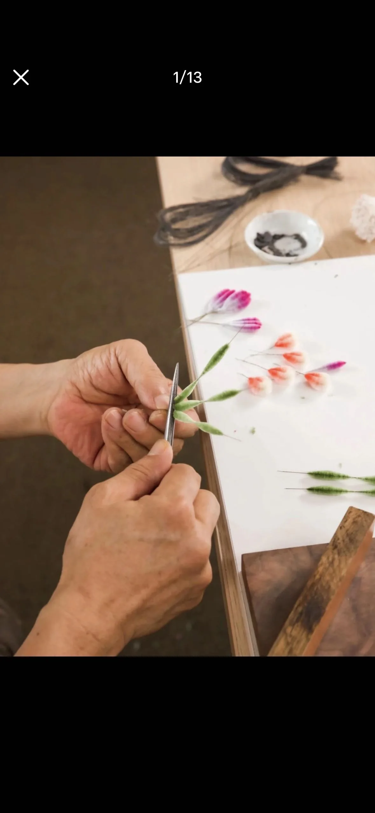
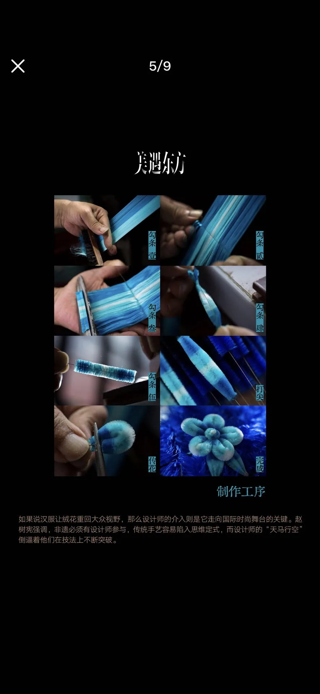

传统技艺 · 蚕丝成花
南京绒花
工序 01 / 04
劈绒 · 理丝
花还没有开，颜色先在丝线上醒来。
熟绒经过染色，成为花瓣与花蕊的材料。先分劈丝束、理清走向，再把绒面梳顺，为后面的勾条作准备。

工序 02 / 04
勾条
细铜丝，给柔软的蚕丝一副骨架。
用铜丝夹住排齐的绒面，剪下后捻紧、搓匀，做成蓬松的绒条。长短与厚薄的均匀，决定之后塑形的基础。
工序 03 / 04
打尖
一边转动，一边修出花叶的轮廓。
一手捻转绒条，一手用剪刀修整。原本均匀的绒条逐渐有了尖端和弧度，成为可以组合的花瓣、叶片。
工序 04 / 04
传花 · 成形
把分散的花瓣，攒成一朵不会凋谢的花。
修好的绒条经过造型、组合，再与花蕊、枝叶相接。一束蚕丝走到这里，才变成可以佩戴、可以陈设的绒花。